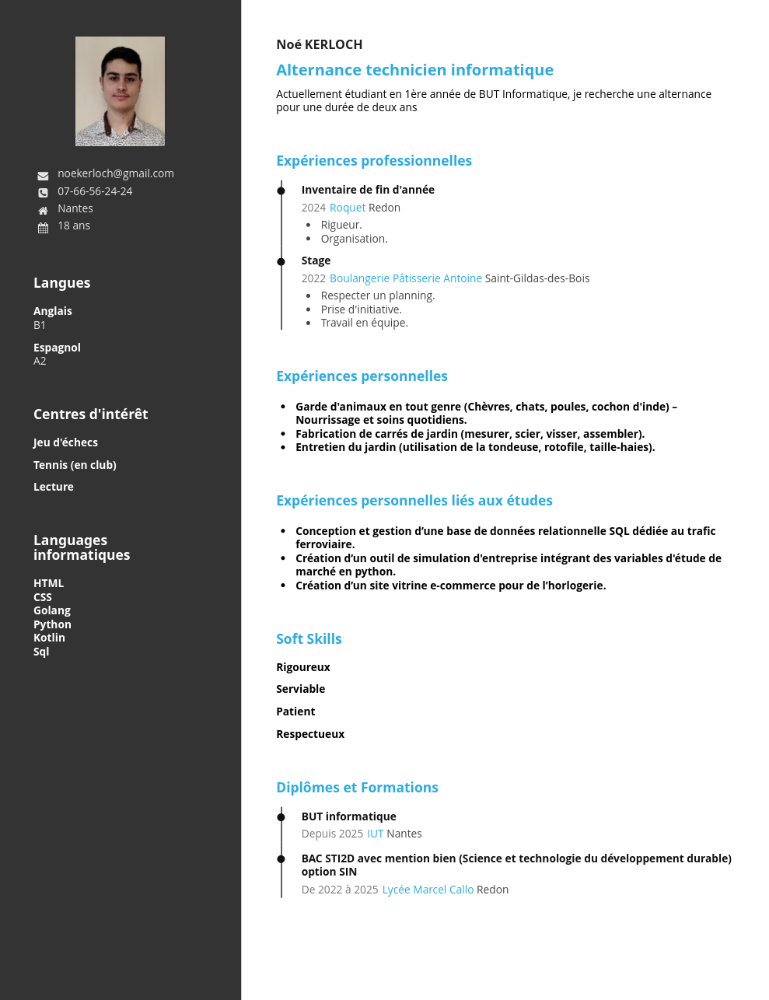

Portfolio développeur
Bonjour et bienvenue sur mon portfolio.
Je m'appelle Noé Kerloch, j'ai 19 ans et je suis originaire de Saint-Gildas-des-Bois, en Loire-Atlantique.
Je suis passionné par l'informatique et les jeux vidéo depuis de nombreuses années. Je me suis donc naturellement dirigé
vers un bac technologique avec la spécialité SIN (Systèmes d'Information et Numérique).
Après avoir obtenu le bac avec mention bien en 2025, j'ai intégré le BUT Informatique de Nantes, dans l'objectif d'intégrer
par la suite une école d'ingénieur.
Durant cette première année de BUT informatique, j'ai approfondi mes connaissances en développement et découvert de
nouvelles technologies. J'ai ainsi participé à plusieurs projets d'équipe qui m'ont permis de mettre en pratique mes
compétences et de les enrichir. Plus tard, j'envisage de me spécialiser en développement d'IA.
Si vous souhaitez en savoir plus sur moi, mes compétences et mes différents projets, ou tout simplement savoir comment
me contacter, n'hésitez pas à explorer ce site et à me faire des retours.
Bonne lecture.
Le projet « Flip 7 » est une adaptation numérique du jeu de société en Kotlin avec JavaFX. Une partie importante du travail a consisté à vérifier la logique métier en créant des tests unitaires rigoureux (tables de décision, cas limites et gestion des exceptions) afin de s’assurer que la bibliothèque fournie fonctionne de façon fiable.
L'interface développée prend en charge les mécaniques de jeu, la gestion et la persistance des profils de joueurs, ainsi que la personnalisation des règles et la visualisation en direct de l'évolution des scores.
Le projet Folex est une maquette de site e-commerce dédiée aux montres de luxe. Notre but était de coder un site vitrine pour imaginer le parcours utilisateur. Nous avons développé toute l'interface visuelle : de la connexion fictive à l'affichage du catalogue et du panier. L'enjeu technique était de concevoir un design fluide, soigné et responsive, afin de simuler une expérience d'achat réaliste.
Le projet « Particules » est une simulation visuelle interactive développée en Go. Le moteur simule la gravité,
gère les limites de l'écran et calcule les collisions entre les éléments. Les particules possèdent des propriétés
dynamiques, comme des variations de couleurs ou des trajectoires circulaires.
L'interface est contrôlable en temps réel : l'utilisateur peut ajuster l'intensité de la gravité, changer le taux
d'apparition ou lier la source des particules à la souris.
Avant d'intégrer une formation en informatique, je m'intéressais déjà à la programmation : j'ai créé un jeu en 2D avec une gravité simpliste et un personnage capable de sauter et de se déplacer. Cette expérience m'a aidé à progresser dans la gestion des variables, des collisions et des classes, et à savoir m'adapter à différents langages. Elle m'a permis d'être plus à l'aise lors des cours de programmation par la suite.
